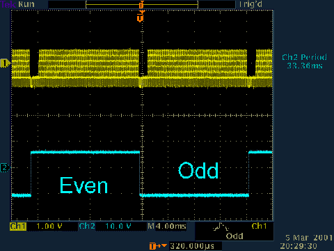
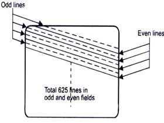
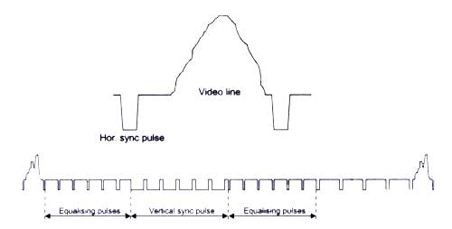
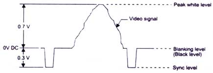
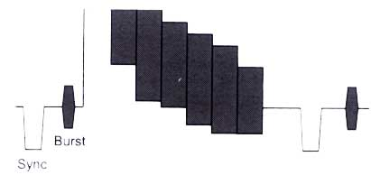

Line period 64 us (Micro-seconds)
Line blanking 12.05 +- 0.25 us
Line sync 4.7 +- 0.1 us
Front porch: 1.65 +- 0.1 us
Burst start 5.6 +- 0.1 us after sync start.
Burst 10 +- 1 cycles
a = line sync
b = back porch

There are
various Video/Television standards in use. Important ones are
CCIR/PAL, EIA/NTSC, SECAM etc. The major difference between
these standards is in the no. of scanning lines and frame frequency.
CCIR standard has 625 lines/frame and 25 frames/sec. EIA standard has 525 lines/frame and 30 frames/sec.
1. CCIR/PAL standard video signal has 625 lines/frame and it repeats @ 25 frames/sec.
2. Each frame is split into 2 fields; - each consisting of 312.5
lines, called odd and even fields. Thus field rate is 50. i.e. CCIR
/PAL std has 50 fields/sec rate .
3. 3. Interlacing: The lines of odd-even field lie alternately
. This method of scanning is called interlacing. This interlaced
scanning is used to reduce flicker while displaying the image on a
monitor.
Interlaced scanning process is shown below.

Starting of each Horizontal line is marked by a Horizontal sync pulse and the starting of each field by a vertical sync pulse. There are 625 Horizontal sync pulses per frame and 50 vertical sync pulses per second. Vertical sync pulse is a serrated block pulse as shown.

Synchronisation pulses ensure that the video image is locked on a video monitor (or VCR etc) vertically and horizontally without any jitter or rolling. If vertical sync is lost, picture may move/tear vertically. If horizontal sync is lost, picture may move/tear horizontally. Synchronisation pulse ensure that all the equipment used in a CCTV set up like VCRs, Monitors, Multiplexers and cameras are locked together. Video information is carried on each line except portions which are in blank periods (Horizontal & Vertical blanking / retrace period).

( Refer to the Application Note 3 on Characteristic impedance) Colour Video SignalTrue components
of colour video signals are R,G,B signals . This method of
representing colour signals requires 3 video channels or cables and are
seldom used, (except in computer monitors)
From the RGB signals, luminance can be represented as below.
Y = 0.3UR + 0.59UG + 0.11UB is the brightness information.
From the R, G, B and Y signals, Colour - Difference signals (R-Y) and (B-Y) are generated.
These colour - difference signals are modulated on a colour
sub-carrier signal (4.43MHz for PAL standard ) and is added to the Y
information. This mixed signal is known as composite colour video
signal. This composite signal requires only one cable for transmission.
At the monitor, special filter circuits are used to separate the
luminance and colour difference signals. From these signals R , G , B
information is separated and is fed to the RGB guns in the monitor.
To aid separation of colour signals from composite video signal
, a colour burst signal is added to the back porch of Horizontal
synchronization signal.
The composite colour bar video signal is shown below.

Colour bar composite video signal
A colour bar
signal has a maximum bandwidth of 0-5.5 MHz. For monochrome signals, the
colour subcarrier and colour components are absent. For such a signal
the bandwidth depends on the resolution of the camera. Typically it may
vary from 3 MHz for a low resolution camera to 5 MHz for a high
resolution camera.
It may be noted that the colour information is carried on the
sub-carrier which is at high frequency portion of the video signal. Thus
when video signal is transmitted over long distances through coaxial
cable, the colour saturation, contrast as well as horizontal pixel
resolution gets reduced. If the attenuation is too high, the colour
video signal may even appear as Black & White on a colour
monitor.
Resolution is the
property of a system to display fine details. The higher the
resolution, the more details we can see. The resolution of a TV picture
depends on the no. of active scanning lines ,the quality of the camera,
the quality of the monitor and the quality of the transmitting media.
There are 2 types of resolutions - Vertical and horizontal.
Vertical resolution is defined by the no: of horizontal lines /
details that can be resolved on a monitor screen.
Horizontal resolution is the number of effective pixels /
details along a horizontal line that can be resolved on a monitor
screen. This depends on the quality of the camera & monitor and
essentially on the Band Width of the system.
Any CCIR / PAL source like camera , test signal generator , Multiplexer or VCR has to output images confirming to CCIR standard, i.e., @ 50 fields / second rate and are all synchronously timed and has to be as per standards. Only, then any other video system like a video monitor that can lock to it. When VCR is played back in the fast forward mode, fields are output @ 50 fields/ sec rate but it will be skipping images (fields) compared to normal playback. Similarly in slow motion mode, VCR will be repeating images (fields) since tape is moving slow. When VCR is in still mode, it is still outputting 50 fields / sec, but all are same video image fields.
S-VHS SIGNALS VHS or
Super-VHS is a VCR format which uses improved circuits to preserve more
luminance bandwidth (and hence resolution) during recording and
playback. Also such VCRs have dedicated luminance (Y) and chrominance
(colour) (C) signal inputs and outputs. The full capability of
S-VHS could be obtained by using separate Y and C inputs and outputs.
Since Y and C signals are kept separate, some artifacts like 'cross
colouring' and 'luminance cross talk' will be less in SVHS
recording and playback compared to composite VHS VCRs. But separate Y
and C signals require two separate cables to carry them. Also S-VHS VCRs
are costlier and special S-VHS tapes are required to get full
benefits.
When a composite
video information has to be processed like that in a Multiplexer , it
has to be
digitised. This is done as per broadcast standard i.e., CCIR 601
standard. In this standard the video is separated into luminance and
colour difference signals Y, R -Y, B -Y and these are sampled @ 13.5
MHz for Y and 6.25 MHz for (R-Y) & (B-Y). The lower sample rate for
R-Y and B-Y doesn't result in any quality reduction , since colour
bandwidth is less than half of that of luminance information. This
digital representation of DIGITAL video signal is known as 4:2:2
standard. This results in 720 pixels /line resolution of video for
luminance, and same no. of pixels for combined R-Y & B-Y signals.
Inferior digital systems uses only 512 pixels per line and hence has lower resolution.

| Symbol | Characteristics | |
| Field Period (ms) | ||
| Field-blanking interval | ||
| Build-up time of the edges of field-blanking pulse (.s) | ||
| Interval between front edge of field-blanking interval and front edge of first equalizing pulse (.s) | ||
| Duration of first sequence of equalizing pulses | ||
| Duration of sequence of synchronizing pulses | ||
| Duration of second sequence of equalizing pulses | ||
| Duration of equalizing pulses (.s) | ||
| Duration of field-synchronizing pulses (.s) | ||
| Interval between field-synchronizing pulses (.s) | ||
| Build-up time of synchronizing and equalizing pulses (.s) |

| Symbol | Characteristics | |
| Field Period (ms) | ||
| Field-blanking interval | ||
| Build-up time of the edges of field-blanking pulse (.s) | ||
| Interval between front edge of field-blanking interval and front edge of first equalizing pulse (.s) | ||
| Duration of first sequence of equalizing pulses | ||
| Duration of sequence of synchronizing pulses | ||
| Duration of second sequence of equalizing pulses | ||
| Duration of equalizing pulses (.s) | ||
| Duration of field-synchronizing pulses (.s) | ||
| Interval between field-synchronizing pulses (.s) | ||
| Build-up time of synchronizing and equalizing pulses (.s) |
720 samples per line, at 13.5 MHz sampling (with digital blanking)
or 702 samples per line, analogue blanking.
Note: Pixels are not square.
The information in this article is based on article posted to sci.engr.television.broadcast newsgroup 13 Nov 1996 by Richard Salmon (richard.salmon@rd.bbc.co.uk) and correction posted to same newsgroup by Peter Harris (Peter.Harris@bbc.co.uk).
Timing:
There are 625 horizontal lines in a normal (ie: non-high definition) PAL TV "frame" (though not all of them are actually visible as some are used for vertical sync, teletext data etc). The TV updates the display 50 times per second, however only half of the vertical resolution is available per update - so the TV alternates between two "fields" - the first field writes only the even lines to the screen and the second field writes the odd lines. The second field is said to be "interlaced" between the first field's scan lines; basically the raster beam is offset half the thickness of a scanline every other field. This process creates flicker because half the total image detail is actually missing each update. Persistance of human vision helps to disguise the effect and it isn't noticeable so much on "real" video but can be a nuisance if you want a non-interlaced display as used on 80's home computers, games consoles etc. Apparently there is no official PAL standard for this but its easy to implement - more later.
As mentioned, some lines are actually outside the visible screen. On my TV, the first line visible right at the top of the screen is roughly 28 scan lines* down from the vertical sync, and the window lasts 266 lines, leaving 10 lines outside the CRT at the bottom. The figures vary slightly on each TV - to be sure of a completely full vertical display on all TVs, some extra lines should be used at the top and bottom. A window of 288 lines - which is a common video capture resolution setting - should guarantee a full vertical display. *Note the the figures given here refer to the scan line count of a single field (which have 312 or 313 lines total including the sync).
 |
Each scanline lasts 64 microseconds (so the horizontal sync frequency is 15625 Hz), of this 64 microsecond period, only the latter 52 microseconds contains picture data (and some of that is not visible). The first 4 microseconds of a scan line are taken up by the horizontal sync signal (a low pulse) and following on are 8 microseconds of what is known as the "back porch" (this holds colour burst data for composite signals and is not used in RGB mode - the 8us delay still needs to be there though). As mentioned not all of the line is visible, the first and last few microseconds of each available line are normally outside the edges of the visible screen but can be used to ensure a full horizontal display on all TVs. On my TV, the first visible pixels appear at around 1.25 microseconds after the backporch period and the visible line lasts about 48.5 microseconds. Note that the horizontal pixel resolution is not fixed, so within reason you can use whatever speed pixel clock you want. Of course, you normally want your pixels to be as square as possible and a common pixel rate used in DVD players etc is 14.75MHz (so 7.375MHz for non-interlaced pixels). I used an 8MHz clock throughout my Z80 project - this made the time divisions for the sync periods etc simple integers - and the pixels were not noticably rectangular.
Vertical sync is obtained from the last few and first lines of each field. These lines contain a series of special sync pulses which differ on alternate fields: -
The format for field 1 (starting at line 623.. ends at line 5 inclusive):
The format for field 2 (starting at line 311.. ends at line 317 inclusive):
The pre- and post- equalizing pulses are "short syncs" (active low as usual) of 2 microseconds followed by a delay of 30 microseconds - therefore they last half a scanline each. The "long syncs" are 30 microsecond low pulses with a 2 microsecond delay after them, they last half a line each too. The different vertical sync pulse trains of each field is the means by which the raster beam is offset half a scan line for the interlacing.
 |
You can stop the display being interlaced if you want - the solution appears to be to just use the same sync pulse train each field, ie: the 6-5-5 one from 'field one' (which lasts 8 whole lines). I've seen it done like this in chip data sheets and tested it with my Z80 project (also confirmed with a oscilloscope connected to a Playstation2 running a non-interlaced game). The only 'problem' is that you're now dealing with 2 fields of 312 lines instead of 312.5 - which means you get a frame rate of 50.0801Hz instead of 50Hz - but TVs don't seem to have a problem with it. Presumably its possible to alternate between two different sized frames (312 and 313 lines) to maintain the 50Hz average but I've not tried it.